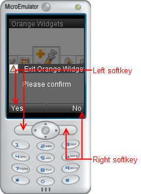

Warning:
This tutorial covers only Tiny Mobile Widgets versions.
On Mobile Widgets, use MenuBar or
Menu prototype.
This chapter present the Tiny Mobile Widgets softkeys.
Tiny Mobile Widgets widget can use 2 softkeys:

Tiny Mobile Widgets softkeys are initialized via a Message on the "Board" channel.
Notes:
Use the initialize() JavaScript function to initialize left and right softkeys on widget startup.
Use internationalization functions to define the softkeys label.
Current widget code :
We can change softkeys label, but the softkeys do nothing when pressed.
This part explains how to listen events on the softkeys.
Manager send message on
"Board" channel when softkeys are pressed.
Define the Message to read message
on "Board" channel.
Create a JavaScript event and the function to process messages on
"Board" channel.
This function read message and verify if message is a left or right softkeys
event.
Link "Board" channel and data_changed event.
We can add code into data_changed(...) function to trace event.
The final widget code :